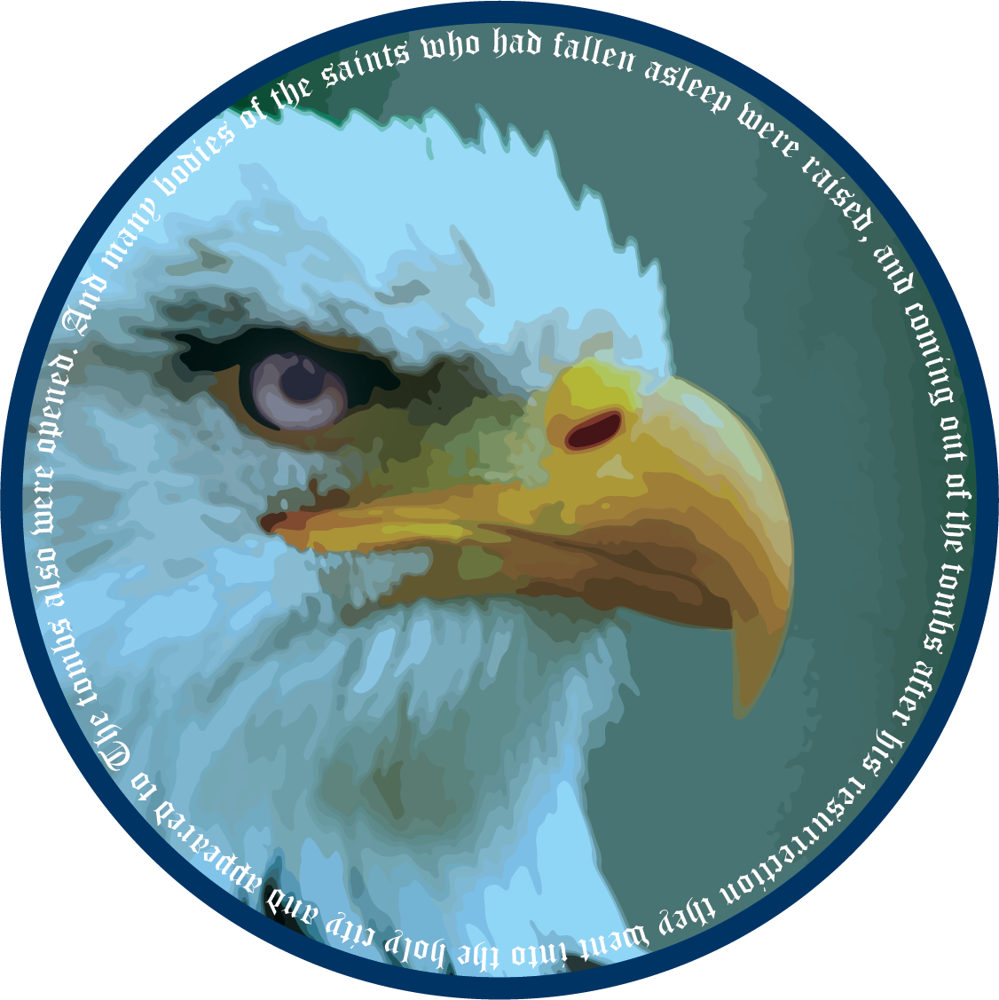

<!doctype html>


<html lang="en">

</html>
<link rel="preconnect" href="https://fonts.googleapis.com">
<link rel="preconnect" href="https://fonts.gstatic.com" crossorigin>
<link href="https://fonts.googleapis.com/css2?family=Merriweather:wght@300&display=swap" rel="stylesheet">
<link href="stylesheet.css" rel="stylesheet" type="text/css">
<head>
		<meta http-equiv="Content-Type" content="text/html; charset=utf-8" />
<title>DPA:Department of Paranormal Affairs - Making a safer tomorrow, today</title>
<meta name="Description" content="The Department of Paranormal Affairs works with local and international governments to contain, protect, and potentially destroy any and all objects and creatures that may be seen as otherworldly or otherwise paranormal">		
<link href="stylesheet.css" rel="stylesheet" type="text/css">
</head>
<body>
	
<div class="head">
		
	<p id="right">Department of Paranormal Affairs</p>
</div>
<ul class="nav">
  		<li><a href="index.html">Home</a></li>
  		<li><a href="#">About Us</a></li>
  		<li><a href="New_Discoveries.html">New discoveries</a></li>
  		<li><a href="Contact.html">Contact us</a></li>
</ul>
<h1>About US</h1>
	<p class="center">The DPA has worked tirelessly with local and foreign governments to document, catalog, and on occasion destroy objects and entities that the world has yet to acknowledge as being “within the realm of possibility” Our scientists as well as our countless field agents work together to painstakingly find these entities and attempt to capture or placate them by any means necessary. </p>

	<footer>© 2022 USFS:DPA ALL RIGHTS RESERVED</footer>
</body>

